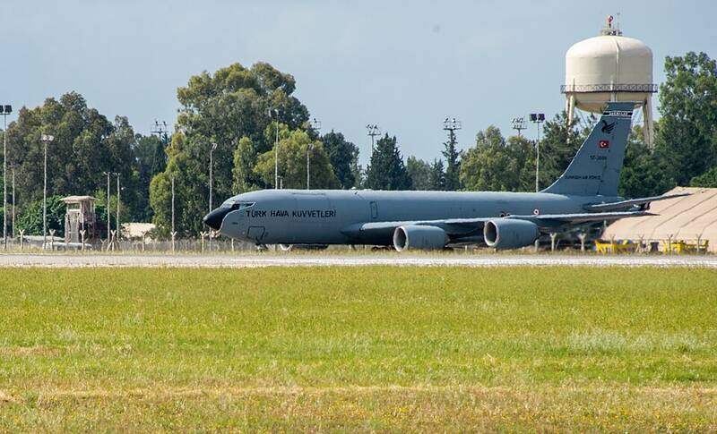

Incirlik Air Base
Türkiye

A Turkish air base that hosts U.S. Air Force units. 1
Open in the interactive Watcher
Sources
- Incirlik Air Base Wikipedia
Türkiye

A Turkish air base that hosts U.S. Air Force units. 1
Open in the interactive Watcher